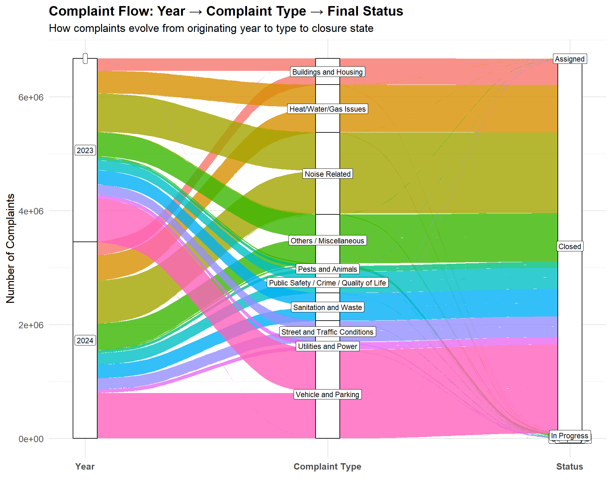
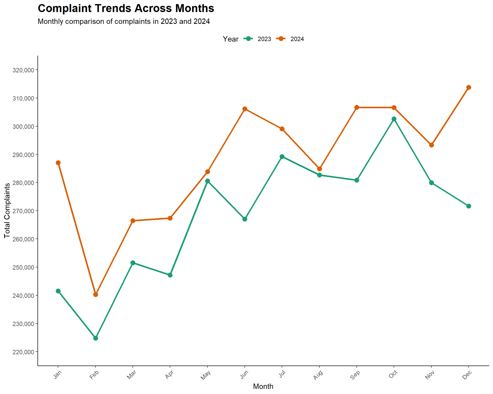
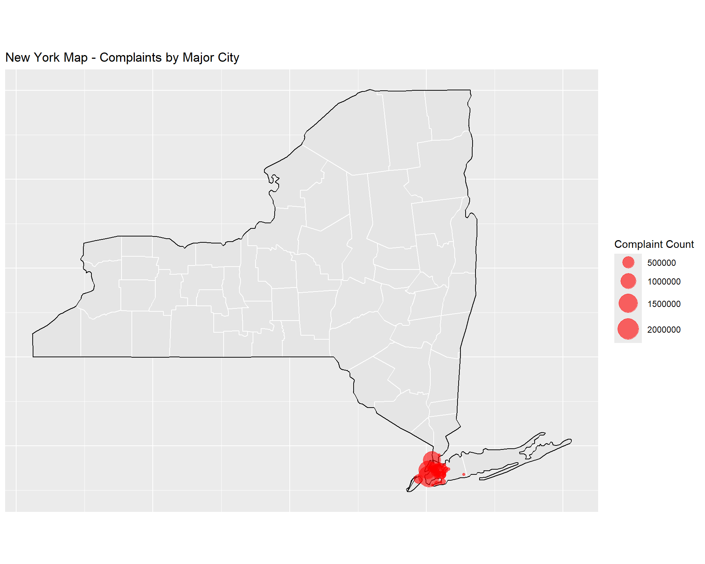

Code
library(dplyr)
library(ggplot2)
library(lubridate)
library(stringr)
library(tidyr)
library(forcats)
library(scales)
library(tidytext)
library(ggalluvial)library(dplyr)
library(ggplot2)
library(lubridate)
library(stringr)
library(tidyr)
library(forcats)
library(scales)
library(tidytext)
library(ggalluvial)There were a unique total of 300 complaint types reported in the dataset. The complaint were bucketed into the following categories for better analysis: Noise Related, Heat/Water/Gas Issues, Buildings and Housing, Sanitation and Waste, Street and Traffic Conditions, Public Safety / Crime / Quality of Life, Vehicle and Parking, Utilities and Power, Pests and Animals, Others / Miscellaneous.
df_clean_final <- readRDS("df_clean_final.rds")
complaint_category_mapping <- list(
"Noise Related" = c(
"Noise - Residential", "Noise - Street/Sidewalk", "Noise - Commercial",
"Noise", "Noise - Vehicle", "Noise - Helicopter", "Noise - Park",
"Noise - House of Worship"
),
"Heat/Water/Gas Issues" = c(
"HEAT/HOT WATER", "Water System", "WATER LEAK", "PLUMBING",
"Water Leak", "Drinking Water", "Water Quality", "Water Maintenance",
"Water Drainage", "Drinking Water General", "Drinking Water Tank",
"Drinking Water Conservation", "Bottled Water", "DEP Sidewalk Condition",
"Non-Residential Heat", "Heat/Hot Water"
),
"Buildings and Housing" = c(
"PAINT/PLASTER", "DOOR/WINDOW", "FLOORING/STAIRS", "APPLIANCE",
"Elevator", "Lead", "SAFETY", "Indoor Air Quality", "Plumbing",
"Boilers", "Electrical", "ELEVATOR", "Asbestos", "Paint/Plaster",
"Door/Window", "OUTSIDE BUILDING", "Wood Pile", "Mold",
"Flooring/Stairs", "Appliance", "Scaffold Safety", "Electric",
"Unstable Building", "Window Guard", "Cooling Tower", "Peeling Paint",
"Facade Insp Safety Pgm", "Outside Building"
),
"Sanitation and Waste" = c(
"UNSANITARY CONDITION", "Dirty Condition", "Missed Collection",
"Residential Disposal Complaint", "Litter Basket Request",
"Commercial Disposal Complaint", "Litter Basket Complaint",
"Sanitation Worker or Vehicle Complaint", "Dumpster Complaint",
"Industrial Waste", "Seasonal Collection", "Institution Disposal Complaint",
"Transfer Station Complaint", "DSNY Internal"
),
"Street and Traffic Conditions" = c(
"Street Condition", "Traffic Signal Condition", "Street Light Condition",
"Sidewalk Condition", "Curb Condition", "Street Sign - Damaged",
"Street Sign - Missing", "Street Sign - Dangling", "Highway Condition",
"Highway Sign - Damaged", "Highway Sign - Missing", "Highway Sign - Dangling",
"Bridge Condition", "Tunnel Condition", "DEP Highway Condition",
"DEP Street Condition"
),
"Public Safety / Crime / Quality of Life" = c(
"Homeless Person Assistance", "Encampment", "Non-Emergency Police Matter",
"Drug Activity", "Graffiti", "Illegal Fireworks", "Panhandling",
"Animal-Abuse", "Violation of Park Rules", "Illegal Posting",
"Hazardous Materials", "Smoking", "Unleashed Dog", "Urinating in Public",
"Disorderly Youth", "Squeegee", "Quality of Life", "Face Covering Violation"
),
"Vehicle and Parking" = c(
"Illegal Parking", "Blocked Driveway", "Abandoned Vehicle",
"Derelict Vehicles", "Broken Parking Meter", "Municipal Parking Facility"
),
"Utilities and Power" = c(
"ELECTRIC", "Sewer", "Root/Sewer/Sidewalk Condition", "Radioactive Material",
"X-Ray Machine/Equipment", "Oil or Gas Spill"
),
"Pests and Animals" = c(
"Rodent", "Animal in a Park", "Unsanitary Pigeon Condition",
"Harboring Bees/Wasps", "Illegal Animal Kept as Pet", "Mosquitoes",
"Pet Shop", "Poison Ivy", "Illegal Animal Sold", "Unsanitary Animal Facility",
"Animal Facility - No Permit", "Unlicensed Dog", "Unsanitary Animal Pvt Property"
),
"Others / Miscellaneous" = c(
"General Construction/Plumbing", "Illegal Dumping", "GENERAL",
"Damaged Tree", "Maintenance or Facility", "New Tree Request",
"For Hire Vehicle Complaint", "Overgrown Tree/Branches", "Consumer Complaint",
"Vendor Enforcement", "Building/Use", "Obstruction", "Air Quality",
"Dead/Dying Tree", "Dead Animal", "Street Sweeping Complaint",
"Taxi Complaint", "Lost Property", "Outdoor Dining",
"Real Time Enforcement", "Mobile Food Vendor", "Bike/Roller/Skate",
"Chronic", "Special Projects Inspection Team (SPIT)", "Illegal Tree Damage",
"Electronics Waste Appointment", "Emergency Response Team (ERT)",
"Food Poisoning", "Smoking or Vaping", "Day Care", "Standing Water",
"Investigations and Discipline (IAD)", "Remaining Taxi Report",
"E-Scooter", "BEST/Site Safety", "Indoor Sewage", "For Hire Vehicle Report",
"Uprooted Stump", "Green Taxi Complaint", "Ferry Inquiry", "Ferry Complaint",
"Beach/Pool/Sauna Complaint", "Tattooing", "Plant", "Bus Stop Shelter Placement",
"LinkNYC", "Bus Stop Shelter Complaint", "Posting Advertisement",
"Taxi Compliment", "AHV Inspection Unit", "Adopt-A-Basket",
"Cranes and Derricks", "Recycling Basket Complaint", "Found Property",
"Incorrect Data", "Bike Rack", "Special Natural Area District (SNAD)",
"Public Toilet", "Dept of Investigations", "Lifeguard", "Special Operations",
"Dispatched Taxi Complaint", "Boiler", "Bench", "Building Condition",
"Taxi Licensee Complaint", "Retailer Complaint", "Calorie Labeling",
"ZTESTINT", "Public Payphone Complaint", "FHV Licensee Complaint",
"Wayfinding SNW", "Leaning", "Bar", "Building Marshal's Office",
"Building Marshals office", "DOB Posted Notice or Order",
"Construction Safety Enforcement", "Tanning", "Executive Inspections",
"Internal", "Code", "Private School", "Vaccine Mandate Non-Compliance",
"Dispatched Taxi Compliment", "SRDE", "Stalled Sites",
"Sustainability Enforcement", "Trans Fat", "Food Establishment",
"Sewer Maintenance", "Bike Rack Condition", "Construction Lead Dust"
)
)
# Create a long-format data frame
complaint_mapping_df <- data.frame(
complaint_type = unlist(complaint_category_mapping),
category = rep(names(complaint_category_mapping),
sapply(complaint_category_mapping, length)),
stringsAsFactors = FALSE
)
rownames(complaint_mapping_df) <- NULL
map_complaint_to_category <- function(complaint_type) {
for (category in names(complaint_category_mapping)) {
if (complaint_type %in% complaint_category_mapping[[category]]) {
return(category)
}
}
return("Others / Miscellaneous")
}
# Apply the mapping to create complaint_bucket column
df_clean_final <- df_clean_final |>
mutate(complaint_bucket = sapply(complaint_type, map_complaint_to_category))
complaint_bucket_counts <- df_clean_final |>
count(complaint_bucket, sort = TRUE)
complaint_bucket_borough <- df_clean_final |>
group_by(borough, complaint_bucket) |>
summarise(count = n(), .groups = "drop") |>
group_by(borough) |>
mutate(
total_borough = sum(count),
proportion = count / total_borough * 100
) |>
ungroup()
print(complaint_bucket_borough)# A tibble: 50 × 5
borough complaint_bucket count total_borough proportion
<chr> <chr> <int> <int> <dbl>
1 BRONX Buildings and Housing 152187 1365908 11.1
2 BRONX Heat/Water/Gas Issues 280270 1365908 20.5
3 BRONX Noise Related 354903 1365908 26.0
4 BRONX Others / Miscellaneous 105631 1365908 7.73
5 BRONX Pests and Animals 14932 1365908 1.09
6 BRONX Public Safety / Crime / Quality of L… 32185 1365908 2.36
7 BRONX Sanitation and Waste 107341 1365908 7.86
8 BRONX Street and Traffic Conditions 49349 1365908 3.61
9 BRONX Utilities and Power 28127 1365908 2.06
10 BRONX Vehicle and Parking 240983 1365908 17.6
# ℹ 40 more rows# prepare plot data: percent label and reorder within each borough
library(forcats)
library(scales)
library(tidytext)
plot_df <- complaint_bucket_borough |>
mutate(prop_label = paste0(round(proportion, 1), "%"),
complaint_bucket = reorder_within(complaint_bucket, proportion, borough, fun = max))
# Cleveland dot-plot showing proportion (%) and ordered by highest per borough
ggplot(plot_df, aes(x = proportion, y = complaint_bucket)) +
geom_segment(aes(x = 0, xend = proportion, yend = complaint_bucket),
color = "gray80") +
geom_point(aes(color = borough), size = 2) +
facet_wrap(~ borough, scales = "free_y", ncol = 2) +
scale_x_continuous(labels = function(x) paste0(x, "%")) +
scale_y_reordered() +
scale_color_brewer(palette = "Set2") +
theme_minimal() +
theme(
legend.position = "none",
axis.text.x = element_text(size = 7),
axis.text.y = element_text(size = 8),
plot.margin = margin(5, 30, 5, 5) # room for labels
) +
labs(
title = "Complaint Categories by Borough (Cleveland dot plot)",
subtitle = "Proportion of complaints by category within each borough",
x = "Proportion (%)",
y = "Complaint Category"
) +
coord_cartesian(clip = "off")
# Prepare alluvial data
df_viz <- df_clean_final %>%
mutate(
year = year(created_date),
month = floor_date(created_date, "month"),
status_clean = ifelse(status == "", NA, status)
)
df_alluvial <- df_viz |>
filter(!is.na(status_clean)) |>
count(year, complaint_bucket, status_clean)
# Alluvial Plot
ggplot(
df_alluvial,
aes(
axis1 = year,
axis2 = complaint_bucket,
axis3 = status_clean,
y = n
)
) +
geom_alluvium(aes(fill = complaint_bucket), width = 1/10, alpha = 0.8) +
geom_stratum(width = 1/10) +
geom_label(
stat = "stratum",
aes(label = after_stat(stratum)),
size = 3,
fill = "white"
) +
scale_x_discrete(
limits = c("Year", "Complaint Type", "Status"),
expand = c(.05, .05)
) +
labs(
title = "Complaint Flow: Year → Complaint Type → Final Status",
subtitle = "How complaints evolve from originating year to type to closure state",
y = "Number of Complaints",
x = ""
) +
theme_minimal(base_size = 13) +
theme(
legend.position = "none",
plot.title = element_text(face = "bold"),
axis.text.x = element_text(face = "bold")
)
library(dplyr)
library(ggplot2)
library(lubridate)
# Calculate resolution time
df_clean <- df_clean_final |>
mutate(
created_date = as.POSIXct(created_date),
closed_date = as.POSIXct(closed_date),
resolution_time_days = as.numeric(difftime(closed_date, created_date, units = "days"))
) |>
filter(!is.na(resolution_time_days), resolution_time_days >= 0)
# Top 15 agencies by complaint volume
top_agencies <- df_clean |>
count(agency_name) |>
slice_max(n, n = 15) |>
pull(agency_name)
# Boxplot: resolution time by agency
df_clean |>
filter(agency_name %in% top_agencies) |>
mutate(agency_name = reorder(agency_name, resolution_time_days, FUN = median)) |>
ggplot(aes(x = agency_name, y = resolution_time_days)) +
geom_boxplot(fill = "steelblue", alpha = 0.7, outlier.alpha = 0.3) +
coord_flip() +
scale_y_continuous(limits = c(0, quantile(df_clean$resolution_time_days, 0.95, na.rm = TRUE))) +
labs(
title = "Resolution Time Distribution by Agency (Top 15)",
subtitle = "Median, quartiles, and outliers shown",
x = "Agency",
y = "Resolution Time (Days)"
) +
theme_minimal(base_size = 13) +
theme(
legend.position = "none",
plot.title = element_text(face = "bold")
)
complaints <- df_clean_final %>%
mutate(
year = year(created_date),
month = month(created_date, label = TRUE, abbr = TRUE), # Jan, Feb, etc.
month_num = month(created_date), # 1, 2, 3, etc.
year_month = floor_date(created_date, "month") # First day of each month
)
complaints_summary <- complaints %>%
filter(!is.na(year)) %>%
group_by(year, month, month_num) %>%
summarise(total_complaints = n(), .groups = "drop") %>%
arrange(year, month_num)
plot3 <- ggplot(complaints_summary,
aes(x = month_num, y = total_complaints,
color = factor(year), group = year)) +
geom_line(size = 1.2) +
geom_point(size = 3) +
scale_x_continuous(breaks = 1:12, labels = month.abb) +
scale_y_continuous(
limits = c(220000, 320000),
breaks = seq(220000, 320000, by = 10000),
labels = scales::comma
) +
scale_color_brewer(palette = "Dark2", name = "Year") +
labs(
title = "Complaint Trends Across Months",
subtitle = "Monthly comparison of complaints in 2023 and 2024",
x = "Month",
y = "Total Complaints"
) +
theme(
panel.grid.major = element_blank(),
panel.grid.minor = element_blank(),
panel.background = element_blank(),
plot.title = element_text(face = "bold", size = 16),
axis.line = element_line(color = "black"),
axis.text.x = element_text(angle = 45, hjust = 1),
legend.position = "top"
)
print(plot3)
library(maps)
library(ggplot2)
library(dplyr)
library(zipcodeR)
# Load NY state and county map data
states <- map_data("state")
counties <- map_data("county")
# Filter for New York
new_york <- subset(states, region == "new york")
new_york_county <- subset(counties, region == "new york")
# Get all NY ZIP codes with their associated data (including lat/lng)
ny_zipcodes <- search_state('NY')
# Join df_clean_final with the full ZIP code data
df_with_cities <- df_clean_final %>%
left_join(
ny_zipcodes %>% select(zipcode, major_city, lat, lng),
by = c("incident_zip" = "zipcode")
)
# Aggregate complaint counts by major_city
city_complaints <- df_with_cities %>%
filter(!is.na(major_city)) %>%
group_by(major_city) %>%
summarise(
complaint_count = n(),
lat = first(lat), # Get latitude from zipcodeR data
lng = first(lng) # Get longitude from zipcodeR data
) %>%
arrange(desc(complaint_count))
# Create NY map with counties and city points
ny_map <- ggplot(data = new_york, mapping = aes(x = long, y = lat, group = group)) +
coord_fixed(1.3) +
geom_polygon(color = "black", fill = "gray90") +
geom_polygon(data = new_york_county, fill = NA, color = "white") +
geom_polygon(color = "black", fill = NA) +
# Add city points sized by complaint count
geom_point(
data = city_complaints,
aes(x = lng, y = lat, size = complaint_count, group = NULL),
color = "red",
alpha = 0.6
) +
scale_size_continuous(
name = "Complaint Count",
range = c(1, 10)
) +
ggtitle("New York Map - Complaints by Major City") +
theme(
axis.title.x = element_blank(),
axis.text.x = element_blank(),
axis.ticks.x = element_blank(),
axis.title.y = element_blank(),
axis.text.y = element_blank(),
axis.ticks.y = element_blank()
)
print(ny_map)
# View top cities by complaint count
head(city_complaints, 10)# A tibble: 10 × 4
major_city complaint_count lat lng
<chr> <int> <dbl> <dbl>
1 Brooklyn 2034259 40.7 -74.0
2 New York 1378757 40.7 -74.0
3 Bronx 1361056 40.8 -73.9
4 Staten Island 248200 40.6 -74.1
5 Jamaica 169021 40.7 -73.8
6 Astoria 122885 40.8 -73.9
7 Flushing 109955 40.8 -73.8
8 Ridgewood 86770 40.7 -73.9
9 Corona 67699 40.8 -73.8
10 Fresh Meadows 65316 40.7 -73.8ny_map <- ggplot(data = new_york, mapping = aes(x = long, y = lat, group = group)) +
coord_fixed(1.3) +
geom_polygon(color = "black", fill = "gray90") +
geom_polygon(data = new_york_county, fill = NA, color = "white") +
geom_polygon(color = "black", fill = NA) +
# Add city points sized by complaint count
geom_point(
data = city_complaints,
aes(x = lng, y = lat, size = complaint_count, group = NULL),
color = "red",
alpha = 0.6
) +
scale_size_continuous(
name = "Complaint Count",
range = c(1, 10) # Adjust size range as needed
) +
ggtitle("New York Map - Complaints by Major City") +
theme(
axis.title.x = element_blank(),
axis.text.x = element_blank(),
axis.ticks.x = element_blank(),
axis.title.y = element_blank(),
axis.text.y = element_blank(),
axis.ticks.y = element_blank()
)
print(ny_map)
# View top cities by complaint count
head(city_complaints, 10)# A tibble: 10 × 4
major_city complaint_count lat lng
<chr> <int> <dbl> <dbl>
1 Brooklyn 2034259 40.7 -74.0
2 New York 1378757 40.7 -74.0
3 Bronx 1361056 40.8 -73.9
4 Staten Island 248200 40.6 -74.1
5 Jamaica 169021 40.7 -73.8
6 Astoria 122885 40.8 -73.9
7 Flushing 109955 40.8 -73.8
8 Ridgewood 86770 40.7 -73.9
9 Corona 67699 40.8 -73.8
10 Fresh Meadows 65316 40.7 -73.8